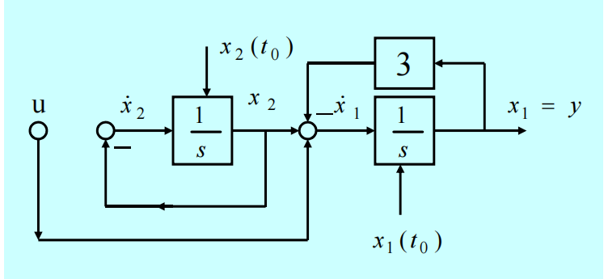

基本概念¶
状态空间: 以状态变量\(x_1, x_2, \cdots, x_n\)为坐标轴构成的n维空间. 系统在时刻t的状态x(t) 是状态空间中的一个点。随时间的变化，x(t) 在状态空间中描绘出一条轨迹，称为状态轨迹.
能控性和能观性¶
定义¶
能控性: 在有限的时间内, 将状态变量由每个初始状态转移到任意的终止状态, 这种系统称为完全能控.
能观性：对于任意的初始状态x0，只要知道在某个有限时间内的输入u(t)和输出y(t)，就可以唯一确定该初始状态x0。
通过系统框图很容易判断系统的能控性和能观性.例如:

该图中x2能观不能控, x1能控能观. 因此该系统完全能观, 不完全能控.
能控性判别¶
系统的能控性仅取决于状态方程中的系统矩阵A和控制矩阵B, 用系统(A, B)指代.
判据1. 秩判据. \(M_c=[B\ AB\ \cdots\ A^{n-1}B]\)满足\(rankM_c=n\)
判据2. PHB秩判据I. 对于A的任意特征值\(\lambda\), 均有\(rank[\lambda I-A\ \ \ B]=n\)
判据3. PHB秩判据II. \(rank[sI-A\ \ \ B]=n\)
判据4. PHB秩向量判据. A不存在与B的所有列相正交的非零左特征向量